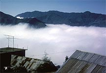
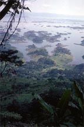
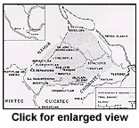
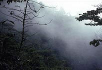
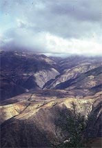

THE BOTANY OF SALVIA DIVINORUM (LABIATAE)The Mazatec Landscape The Mazatec Indians have lived in a relatively isolated area in northernmost Oaxaca, wedged in between the states of Puebla and Veracruz, since well before the arrival of the Spanish in the Sixteenth Century (Fig. 1). The topography of the region is diverse, characterized by rugged highland areas virtually without level ground. The dissection of the terrain is reflected by the many dialects of the Mazatecan language spoken, and the unique "lenguage silbado," or whistle language, by which the Mazatecs can carry on a conversation with whistle sounds only. Like the yodeling of the Alpine shepherds, communication from one peak to another is made easier using a vocabulary of sounds especially tailored for that purpose. The temperate highlands of the Sierra Mazateca, roughly 1200-2500 m in elevation, grade into tropical lowlands, which comprise somewhere near 40 percent of the total area inhabited by the Mazatec (McMahon 1973; Vasquez 1981).  South and east of the highland region, these areas are part of the extensive Papaloapan river basin. About half of the roughly 1000 km2 of lowland terrain once inhabited by the Mazatec was inundated with water in 1955 to form the Miguel Aleman Dam. This huge hydro-electric project forced over 20,000 Mazatecs to abandon their homes, and many of those displaced now live on the banks of the dam, including its eastern shores (where S. divinorum does not grow, see below).

The climates of highland and lowland Mazatec country are quite unlike each
other. At an elevation of 1700 m, the large and central community of Huautla
de Jimenez is cool and wet. 
Relief from the unrelenting fog comes only during
the short dry season between late March and early May, though the fog is often
replaced by torrential downpours in the summer.
The annual precipitation
ranges from 256 cm to over 400 cm in very wet years, and the average annual
temperature is 61¯F. To the east, at an elevation of 733 m, the village of
Ayautla receives a similar amount of precipitation annually, but is warmer,
with an average temperature of 68¯. Still farther east is San Pedro Ixcatlan,
on a peninsula surrounded by the waters of Aleman Dam, and the adjacent
low-lying "tierra caliente" on the eastern side of the lake.

These areas also
receive a similar yearly amount of rainfall, but they are still warmer, with
annual average temperatures of over 78¯ (Garcia 1973; Vasquez 1981).
The
low-lying areas which surround the dam are much more uniform in temperature
and moisture regime than the dissected highlands, and therefore are more
easily characterized. The rainy seasons (June-August; September-October) and
dry seasons (August, in part; March-May) are less variable than in the
highlands, where different faces of a mountain may have widely different
microclimates.
|